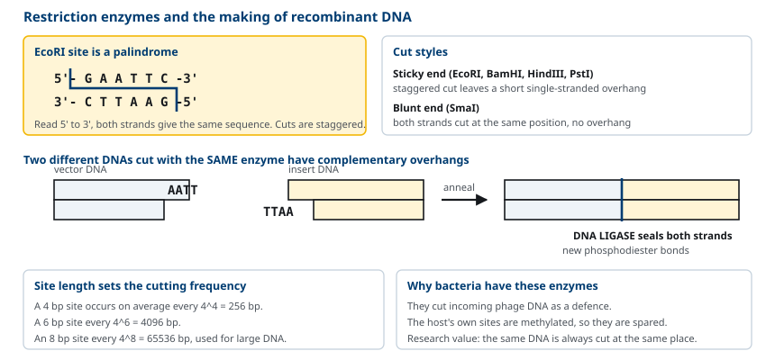
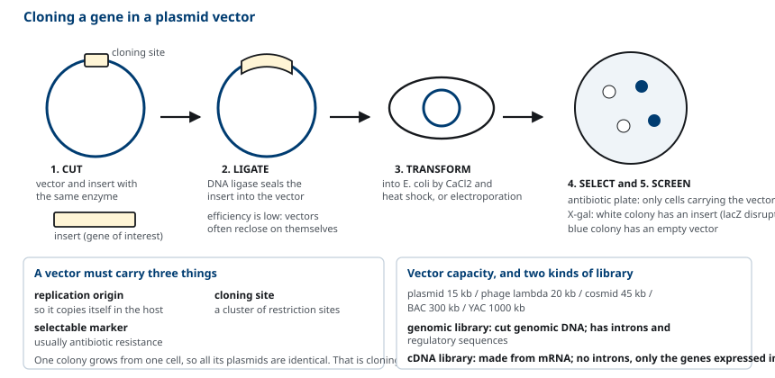
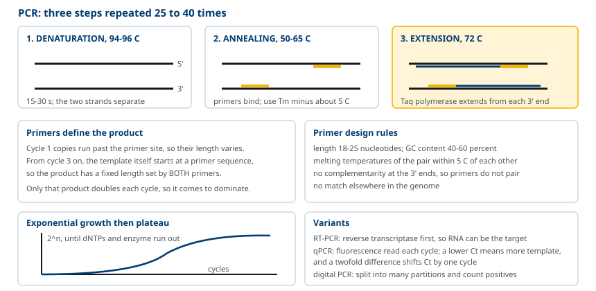
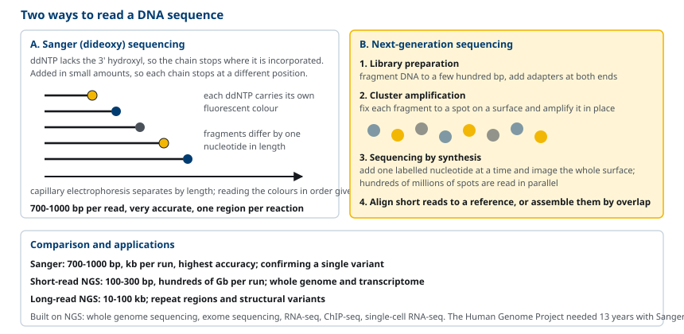
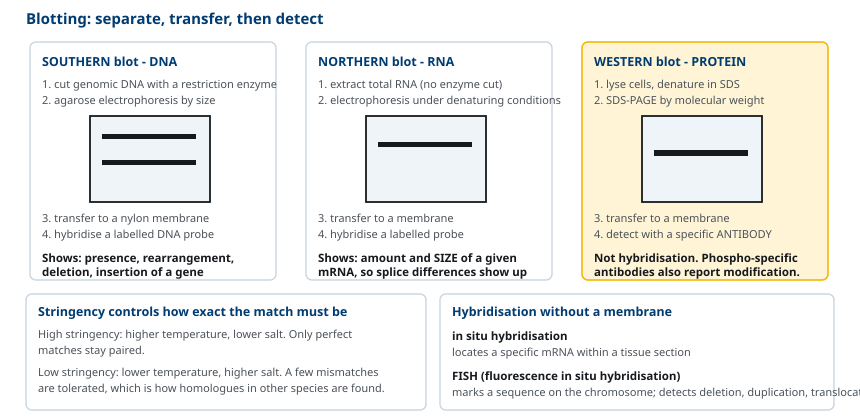
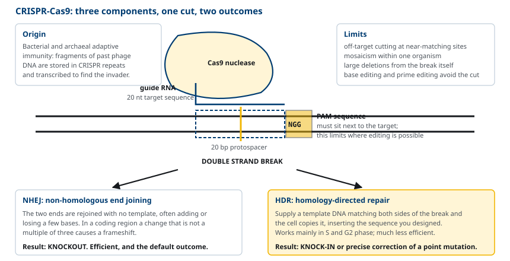

M01-W06-L01 · 인체일반생물학과 기초세포생물학
재조합 DNA와 분자생물학 실험 기법
Recombinant DNA and Techniques of Molecular Biology
학습목표
- 제한효소의 인식 서열과 절단 양식을 설명하고 재조합 DNA가 만들어지는 과정을 쓴다.
- 벡터의 필수 요소를 들고 plasmid cloning의 전 과정을 순서대로 설명한다.
- PCR의 세 단계와 온도 조건을 설명하고 primer 설계의 원칙을 적용한다.
- Sanger 염기서열 분석과 차세대 염기서열 분석의 원리와 처리량 차이를 비교한다.
- Southern, Northern, Western blot의 표적과 절차를 구분하고 결과를 해석한다.
- RT-qPCR, RNA-seq, microarray로 유전자 발현을 측정하는 원리를 설명한다.
- 유전자 도입 방법을 선택 기준과 함께 설명하고 transgenic과 knockout 생물의 차이를 구분한다.
- CRISPR-Cas9의 작동 원리를 세 요소로 설명하고 knockout과 knock-in의 차이를 밝힌다.
선수지식
- M01-W06-L02 유전정보의 흐름 — DNA 복제, 전사, 번역, 염기쌍 상보성, reverse transcriptase
- M01-W05-L01 세포의 기원·진화와 세포 연구 방법 — 세포배양, 모델 생물, 원심분리
- M01-W05-L02 생체분자와 막의 구조 — nucleic acid와 단백질의 구조
강의 구성
- 1. 재조합 DNA 기술의 기본 개념과 제한효소
- 2. 벡터와 cloning
- 3. PCR: 시험관 안의 DNA 증폭
- 4. 염기서열 분석: Sanger와 차세대
- 5. Hybridization: Southern, Northern, Western blot
- 6. 유전자 발현의 측정
- 7. 유전자 도입과 유전자 조작 생물
- 8. CRISPR-Cas9: 유전체 편집의 원리
1. 재조합 DNA 기술의 기본 개념과 제한효소
세포 안에는 특정 유전자 한 copy가 수만 개의 다른 유전자에 섞여 있다. 그 하나를 분리해 분석하려면 증폭과 선택적 조작이 필요하다. 1970년대에 두 가지 도구가 갖추어지면서 이것이 가능해졌다. 제한효소와 벡터다.
제한효소(restriction enzyme, restriction endonuclease)는 세균이 외부에서 들어온 파지 DNA를 끊어 방어하기 위해 갖는 효소다. 세균 자신의 DNA는 같은 서열이 methylation되어 있어 끊기지 않는다. 연구 도구로서의 가치는 인식 서열이 정해져 있어 같은 DNA를 언제나 같은 자리에서 끊는다는 점에 있다.
인식 서열은 대개 4~8 염기쌍이고 palindrome, 즉 두 사슬을 5′→3′로 읽으면 같은 서열이다.
| 효소 | 출처 | 인식 서열 | 절단 양식 |
|---|---|---|---|
| *Eco*RI | E. coli | G↓AATTC | 5′ 돌출(sticky end) |
| *Bam*HI | Bacillus amyloliquefaciens | G↓GATCC | 5′ 돌출 |
| *Hin*dIII | Haemophilus influenzae | A↓AGCTT | 5′ 돌출 |
| *Pst*I | Providencia stuartii | CTGCA↓G | 3′ 돌출 |
| *Sma*I | Serratia marcescens | CCC↓GGG | 돌출 없음(blunt end) |
절단 양식이 재조합의 열쇠다. 두 사슬을 어긋나게 끊으면 짧은 단일사슬 말단이 남는데, 이것을 sticky end라 한다. 같은 효소로 자른 서로 다른 두 DNA는 서로 상보적인 sticky end를 가지므로 염기쌍을 이루어 붙을 수 있다. 붙은 자리를 DNA ligase가 phosphodiester 결합으로 봉하면 원래 자연에 없던 재조합 DNA가 완성된다.
인식 서열의 길이가 절단 빈도를 정한다. 6 염기쌍 서열은 무작위 DNA에서 평균 4⁶ = 4,096 염기쌍마다 한 번 나타나고, 8 염기쌍 서열은 65,536 염기쌍마다 한 번 나타난다. 그래서 큰 DNA를 다룰 때는 인식 서열이 긴 효소를 쓴다.

2. 벡터와 cloning
끊어 붙인 DNA를 증폭하려면 숙주 세포 안에서 복제될 수 있어야 한다. 그 운반체가 벡터(vector)다. 벡터에는 세 가지가 반드시 있어야 한다.
- Replication origin: 숙주 안에서 스스로 복제된다.
- Selectable marker: 벡터가 들어간 세포만 골라낼 수 있게 한다. 보통 항생제 저항성 유전자다.
- Cloning site: 제한효소 인식 서열이 모여 있는 구간(multiple cloning site)으로, 여기에 외래 DNA를 끼워 넣는다.
벡터의 종류는 담을 수 있는 DNA 크기로 나뉜다.
| 벡터 | 수용 크기 | 숙주 | 주된 용도 |
|---|---|---|---|
| Plasmid | ~15 kb | E. coli | 유전자 하나의 cloning, 발현 |
| Bacteriophage λ | ~20 kb | E. coli | 유전체 library |
| Cosmid | ~45 kb | E. coli | 큰 조각 library |
| Bacterial artificial chromosome(BAC) | ~300 kb | E. coli | 유전체 지도, 서열 분석 |
| Yeast artificial chromosome(YAC) | ~1,000 kb | 효모 | 매우 큰 영역 |
Plasmid cloning의 전 과정은 다섯 단계다.
1. 절단: 벡터와 삽입할 DNA를 같은 제한효소로 자른다. 2. 연결(ligation): 두 조각을 섞고 DNA ligase를 넣어 봉합한다. 벡터가 자기끼리 다시 붙는 경우가 많아 효율은 낮다. 3. 형질전환(transformation): 연결 산물을 *E. coli*에 넣는다. CaCl₂ 처리와 열충격, 또는 전기천공(electroporation)을 쓴다. 4. 선택(selection): 항생제가 든 배지에 깔아 벡터가 들어간 세포만 자라게 한다. 5. 확인(screening): 벡터는 들어갔지만 삽입물이 없는 것을 걸러낸다. 삽입 지점이 lacZ 유전자 안에 있으면 삽입물이 들어간 colony는 X-gal 배지에서 흰색으로, 없는 것은 파란색으로 나타난다.
한 colony는 하나의 세포에서 자란 집단이므로 그 안의 plasmid는 모두 같다. 이렇게 단일 분자에서 유래한 동일한 집단을 얻는 것이 cloning이고, 이것이 분자생물학의 출발점이 되었다.
유전체 library와 cDNA library를 구별해야 한다. 유전체 DNA를 잘라 벡터에 넣으면 genomic library이고 intron과 조절 서열을 포함한다. mRNA를 reverse transcriptase로 DNA로 바꾸어 넣으면 cDNA library이고 intron이 없으며 그 조직에서 발현되는 유전자만 들어 있다. 사람 단백질을 세균에서 발현시킬 때는 세균에 splicing 기구가 없으므로 반드시 cDNA를 써야 한다.

3. PCR: 시험관 안의 DNA 증폭
Cloning은 살아 있는 세포를 거치므로 며칠이 걸린다. 1983년 Kary Mullis가 고안한 PCR(polymerase chain reaction)은 세포 없이 몇 시간 안에 특정 구간만 증폭한다.
필요한 것은 다섯 가지다. 주형 DNA, 양쪽 끝을 지정하는 primer 두 개, dNTP 네 종, 열에 안정한 DNA polymerase(*Thermus aquaticus*의 Taq polymerase), 그리고 Mg²⁺이 든 완충액이다. 한 주기는 세 단계로 이루어진다.
1. 변성(denaturation), 94~96°C, 15~30초. 두 사슬이 분리된다. 2. 결합(annealing), 50~65°C, 15~60초. primer가 주형의 상보적 부위에 결합한다. 온도는 primer의 melting temperature에서 약 5°C 낮게 잡는다. 3. 신장(extension), 72°C, 30초~1분. Taq polymerase가 primer의 3′ 말단부터 사슬을 늘린다.
주기마다 DNA 양이 두 배가 되므로 n 주기 뒤에는 2ⁿ배가 된다. 30 주기면 약 10억 배다. 실제로는 후반에 기질과 효소가 고갈되어 증폭이 포화 곡선을 그린다.
증폭되는 것은 두 primer 사이의 구간뿐이라는 점이 중요하다. 첫 두 주기에서는 primer 바깥쪽까지 합성되지만, 세 번째 주기부터 양쪽 primer로 경계가 정해진 산물이 기하급수적으로 늘어 전체를 지배한다.
Primer 설계의 원칙은 다음과 같다. 길이 18~25 nucleotide, GC 함량 40~60%, 두 primer의 melting temperature 차이 5°C 이내, 3′ 말단에 상보적인 서열이 없어 primer끼리 붙지 않게 하고, 표적 외 서열과 일치하지 않게 한다.
PCR의 변형이 용도를 넓힌다.
- RT-PCR: reverse transcriptase로 RNA를 cDNA로 바꾼 뒤 증폭한다. RNA를 표적으로 할 수 있다.
- Real-time PCR(qPCR): 주기마다 형광을 측정해 초기 주형 양을 정량한다. 형광이 역치를 넘는 주기 수(C_t)가 작을수록 주형이 많다. 주형 양이 두 배 차이 나면 C_t가 1 주기 차이 난다.
- Digital PCR: 반응을 수만 개의 미세 구획으로 나누어 양성 구획 수를 세어 절대 정량한다.

4. 염기서열 분석: Sanger와 차세대
Sanger sequencing(dideoxy 법)은 사슬 신장을 특정 염기에서 멈추게 해 서열을 읽는다. 원리는 다음과 같다.
반응에 보통의 dNTP와 함께 소량의 dideoxyNTP(ddNTP)를 넣는다. ddNTP는 3′ hydroxyl기가 없어 다음 nucleotide가 붙을 수 없으므로, 일단 끼어들면 그 자리에서 사슬이 끝난다. ddNTP가 소량이므로 각 사슬은 서로 다른 위치에서 무작위로 끝나고, 결과적으로 길이가 1 nucleotide씩 다른 조각 집단이 생긴다. 네 종의 ddNTP에 서로 다른 형광을 붙여 두면, 모세관 전기영동으로 길이순으로 흘려보내며 형광을 읽어 서열을 그대로 얻는다.
한 번에 읽는 길이는 700~1,000 염기쌍이고 정확도가 높아 지금도 변이 확인의 표준으로 쓰인다. 그러나 반응 하나에 한 구간만 읽으므로 처리량이 낮다. 사람 유전체 초안 작성(Human Genome Project, 1990~2003)에 13년과 약 27억 달러가 든 이유가 여기에 있다.
차세대 염기서열 분석(next-generation sequencing, NGS)은 수억 개의 반응을 동시에 진행해 처리량을 올렸다. 가장 널리 쓰이는 방식의 흐름은 다음과 같다.
1. Library 제작: DNA를 수백 염기쌍으로 조각내고 양쪽에 adapter를 붙인다. 2. 집락 증폭: 각 조각을 고체 표면의 한 지점에 고정하고 그 자리에서 PCR로 증폭해 같은 서열의 집락을 만든다. 3. 합성에 의한 서열 결정(sequencing by synthesis): 형광을 붙인 nucleotide를 한 번에 한 개씩 붙이고 영상을 찍어 어느 염기가 들어갔는지 읽는다. 수억 개 지점을 한 장의 영상으로 동시에 읽는다. 4. 정렬과 조립: 짧은 read를 참조 유전체에 정렬하거나 서로 겹치는 부분으로 이어 붙인다.
| 항목 | Sanger | 단일 read 짧은 NGS | 장-read NGS |
|---|---|---|---|
| Read 길이 | 700~1,000 bp | 100~300 bp | 10~100 kb |
| 한 번의 산출량 | ~kb | 수백 Gb~Tb | 수십 Gb |
| 정확도 | 매우 높다 | 높다 | 중간, 반복 측정으로 보완 |
| 강점 | 단일 구간 확인 | 유전체·전사체 전체 | 반복 서열, 구조 변이 |
NGS가 열어 준 응용은 넓다. 전장유전체 분석(whole genome sequencing), 단백질 암호화 부위만 읽는 exome sequencing, 전사체를 읽는 RNA-seq, DNA-단백질 결합 부위를 찾는 ChIP-seq, 세포 하나씩 읽는 single-cell RNA-seq가 모두 같은 기반 기술 위에 있다.

5. Hybridization: Southern, Northern, Western blot
Hybridization은 단일사슬 핵산이 상보적인 서열과 염기쌍을 이루는 성질을 이용해 특정 서열을 찾아내는 방법이다. 표지한 짧은 핵산(probe)을 섞어 결합 여부를 본다.
결합의 엄격함은 온도와 염 농도로 조절한다. 온도를 높이고 염 농도를 낮추면(high stringency) 완전히 일치하는 서열만 결합이 유지되고, 반대 조건(low stringency)에서는 몇 개가 어긋나도 결합이 남는다. 그래서 종이 다른 생물의 상동 유전자를 찾을 때는 낮은 엄격도를 쓴다.
세 blot을 구분한다. 이름은 Southern이 개발자의 성이고, 나머지는 거기에 맞춘 명칭이다.
| 기법 | 표적 | 분리 | 탐지 |
|---|---|---|---|
| Southern blot | DNA | 제한효소로 자른 뒤 agarose 전기영동 | 표지된 DNA probe와 hybridization |
| Northern blot | RNA | 변성 조건 전기영동 | 표지된 DNA/RNA probe |
| Western blot | 단백질 | SDS-PAGE | 특이 항체(hybridization이 아니다) |
절차의 공통 골격은 같다. 전기영동으로 크기에 따라 분리하고, 겔에서 막(nitrocellulose 또는 nylon)으로 옮기고(blotting), probe나 항체로 표적을 찾아 띠로 본다.
해석이 목적을 정한다. Southern blot은 유전자의 존재와 재배열, 결실, 삽입을 본다. 띠의 크기가 예상과 다르면 그 구간에 구조 변화가 있다는 뜻이다. Northern blot은 특정 mRNA의 양과 크기를 보므로 발현 여부와 alternative splicing의 차이를 알 수 있다. Western blot은 단백질의 양과 크기를 보고, 인산화 특이 항체를 쓰면 변형 상태까지 본다.
막에 옮기지 않고 조직이나 세포 안에서 직접 hybridization하는 방법도 있다. In situ hybridization은 조직 절편에서 특정 mRNA의 위치를 보여주고, fluorescence in situ hybridization(FISH)은 염색체 위의 특정 서열을 형광으로 표시해 결실, 중복, 전좌를 진단한다.

6. 유전자 발현의 측정
유전자가 있다는 것과 발현된다는 것은 다르다. 발현 측정은 전사 수준과 단백질 수준으로 나뉘며, 각 수준에서 한 유전자를 보는 방법과 전체를 보는 방법이 있다.
| 범위 | 전사 수준 | 단백질 수준 |
|---|---|---|
| 유전자 하나 | Northern blot, RT-qPCR, reporter assay | Western blot, ELISA, immunofluorescence |
| 전체 | microarray, RNA-seq | 질량분석 기반 proteomics |
RT-qPCR이 단일 유전자 정량의 표준이다. RNA를 cDNA로 바꾼 뒤 qPCR로 측정하고, 발현량이 변하지 않는 기준 유전자(housekeeping gene)로 보정한다. 상대 정량에는 ΔΔC_t 법을 쓴다. 표적 유전자와 기준 유전자의 C_t 차이를 구하고, 처리군과 대조군 사이의 그 차이를 다시 비교해 2^(−ΔΔC_t)로 배수 변화를 계산한다.
Microarray는 수만 개의 probe를 붙인 칩에 형광 표지한 cDNA를 결합시켜 발현량을 한 번에 측정한다. 이미 알려진 서열만 측정할 수 있다는 한계가 있다.
RNA-seq은 전사체를 직접 서열 분석한다. 각 전사체에 정렬된 read 수가 발현량에 비례하므로 정량이 되고, 동시에 알려지지 않은 전사체, splice variant, 융합 전사체, 변이까지 찾아낸다. Single-cell RNA-seq은 세포를 하나씩 나누어 측정하므로, 조직 전체를 평균한 값이 아니라 세포 종류별 발현 양상을 보여준다.
Reporter assay는 조절 서열의 기능을 직접 검증한다. 관심 promoter나 enhancer 뒤에 luciferase나 GFP 유전자를 붙여 세포에 넣고 신호의 세기를 측정하면, 그 조절 서열이 어떤 조건에서 전사를 켜는지 알 수 있다. 서열의 일부를 바꾸어 넣으면 어느 부위가 필요한지도 가려낼 수 있다.
단백질 상호작용을 보는 방법도 함께 알아둔다. 면역침강(immunoprecipitation)은 항체로 한 단백질을 끌어내려 함께 붙어 나오는 단백질을 확인하고, yeast two-hybrid는 두 단백질의 결합이 전사인자를 재구성해 reporter를 켜는 방식으로 상호작용을 검출한다.
7. 유전자 도입과 유전자 조작 생물
세포나 생물에 외래 DNA를 넣어 기능을 확인하는 것이 분자생물학 실험의 핵심 전략이다. 방법은 숙주에 따라 다르다.
배양 세포로의 도입(transfection)
- 화학적 방법: calcium phosphate 침전, 양전하 지질(lipofection)로 DNA를 세포막과 융합시킨다.
- 물리적 방법: electroporation으로 막에 일시적 구멍을 만들거나, 미세주입(microinjection)으로 직접 찔러 넣는다.
- 바이러스 벡터: retrovirus, lentivirus, adenovirus, adeno-associated virus(AAV)를 쓴다. 효율이 높고 나누어지지 않는 세포에도 들어간다. Lentivirus는 유전체에 삽입되어 영구적으로 발현되고, adenovirus와 AAV는 주로 삽입되지 않아 일시적이다.
도입이 일시적(transient)인지 안정적(stable)인지를 구분한다. 일시적 도입은 수일 안에 사라지고, 안정적 도입은 DNA가 숙주 유전체에 끼어들어 계속 유지된다. 안정적 세포주를 만들 때는 선택 표지(neomycin 저항성 등)로 삽입된 세포만 골라 키운다.
유전자 조작 생물은 두 방향으로 만든다.
- Transgenic 생물: 외래 유전자를 넣어 추가로 발현시킨다. 쥐에서는 수정란의 핵에 DNA를 미세주입한다. 유전자를 과발현시켰을 때 무엇이 일어나는지를 본다.
- Knockout 생물: 특정 유전자를 망가뜨린다. 전통적으로는 상동재조합으로 표적 유전자에 선택 표지를 끼워 넣은 배아줄기세포를 만들고, 이를 배아에 주입해 생식계열로 전달시킨다. 유전자가 없을 때 무엇이 일어나지 않는지를 본다.
조건부 조작(conditional)이 필요한 경우가 많다. 유전자를 처음부터 없애면 발생 과정에서 죽어 성체의 기능을 볼 수 없기 때문이다. Cre-loxP 체계가 이 문제를 해결한다. 표적 유전자의 양쪽에 loxP 서열을 넣어 둔 생물과, 특정 조직이나 특정 시점에만 Cre recombinase를 발현하는 생물을 교배하면, Cre가 발현된 세포에서만 loxP 사이의 DNA가 잘려 나간다. 즉 조직 특이적, 시기 특이적 knockout이 된다.
RNA 수준에서 일시적으로 발현을 줄이는 방법도 있다. RNA interference(RNAi)는 짧은 이중사슬 RNA(siRNA, shRNA)를 넣어 상보적인 mRNA를 분해하거나 번역을 막는다. 유전체를 바꾸지 않고 빠르게 효과를 보지만, 발현이 완전히 없어지지 않고(knockdown) 표적 외 효과가 생길 수 있다.
8. CRISPR-Cas9: 유전체 편집의 원리
CRISPR-Cas는 본래 세균과 archaea가 파지에 대항해 갖는 적응 면역 체계다. 세균은 침입한 파지 DNA의 조각을 자신의 유전체의 CRISPR(clustered regularly interspaced short palindromic repeats) 구간에 기록해 두고, 다음에 같은 파지가 들어오면 그 기록을 RNA로 전사해 침입 DNA를 찾아 끊는다.
연구 도구로서의 체계는 세 요소로 단순화되었다.
- Cas9: DNA 이중사슬을 끊는 nuclease.
- Guide RNA(gRNA): 20 nucleotide의 표적 인식 서열을 가진 RNA. 이 서열만 바꾸면 표적을 바꿀 수 있다.
- PAM 서열: 표적 바로 옆에 있어야 하는 짧은 서열(가장 널리 쓰이는 Streptococcus pyogenes Cas9에서는 5′-NGG-3′). Cas9이 결합하기 위한 조건이며, 이 때문에 편집 가능한 위치가 제한된다.
작동 순서는 다음과 같다. gRNA가 Cas9과 복합체를 이루고, 복합체가 유전체를 훑으며 PAM 서열을 찾는다. PAM 옆의 서열이 gRNA의 20 nucleotide와 상보적으로 짝지어지면 Cas9이 그 자리에서 이중사슬 절단을 만든다.
이후 세포 자신의 수선 경로가 결과를 정한다. 같은 절단에서 두 가지 다른 결과가 나온다.
- Non-homologous end joining(NHEJ): 끊긴 두 끝을 그냥 이어 붙인다. 이 과정에서 몇 염기의 삽입이나 결실이 생기기 쉽고, 코딩 영역이면 frameshift가 되어 유전자가 망가진다. Knockout을 만드는 경로다.
- Homology-directed repair(HDR): 절단 부위 양쪽과 같은 서열을 가진 주형 DNA를 함께 넣어 주면 그 주형을 본떠 수선한다. 원하는 서열을 정확히 끼워 넣을 수 있다. Knock-in과 점 변이 교정의 경로다. 효율은 NHEJ보다 훨씬 낮다.
기존 방법과 비교하면 장점이 분명하다. 상동재조합 기반 knockout은 배아줄기세포에서 수개월이 걸리고 생물마다 체계를 새로 세워야 했다. CRISPR는 gRNA의 20 nucleotide만 바꾸면 어느 유전자든, 거의 어느 생물에서든 표적을 바꿀 수 있고, 여러 유전자를 동시에 편집할 수도 있다.

한계와 주의점도 함께 알아야 한다. gRNA와 몇 염기가 어긋나는 다른 부위도 절단되는 표적 외 편집(off-target)이 생길 수 있어, 서열을 설계할 때 유전체 전체에서 유사 부위를 미리 검색한다. 한 개체 안에서 일부 세포만 편집되어 모자이크가 되기도 한다. 이중사슬 절단 자체가 큰 결실이나 염색체 재배열을 유발할 수 있다. 이 때문에 nuclease 활성을 없앤 Cas9에 염기 변환 효소를 붙여 절단 없이 한 염기만 바꾸는 base editing, 역전사효소를 붙인 prime editing 같은 변형이 개발되었다.
확인 문항
사람의 insulin을 *E. coli*에서 생산하려 한다. 사람 유전체 DNA를 그대로 벡터에 넣으면 실패하는 이유와 올바른 방법을 설명하라.
해설
사람의 INS 유전자에는 intron이 있고, *E. coli*에는 spliceosome이 없어 intron을 잘라내지 못한다. 유전체 DNA를 그대로 발현시키면 intron까지 번역되어 정상 insulin이 만들어지지 않는다. 올바른 방법은 insulin을 발현하는 조직의 mRNA를 분리해 reverse transcriptase로 cDNA를 만들고, 그 cDNA를 발현 벡터에 넣는 것이다. cDNA는 splicing이 끝난 mRNA를 주형으로 만들어졌으므로 intron이 없고 코딩 서열만 연속되어 있다. 추가로 세균이 인식하는 promoter와 ribosome 결합 서열을 벡터가 제공해야 한다.
PCR에서 첫 두 주기에는 primer 바깥쪽까지 합성되는데도 최종 산물은 두 primer 사이 구간으로 거의 균일하다. 이 결과가 나오는 이유를 설명하라.
해설
주형이 무엇인지에 따라 산물의 길이가 달라지기 때문이다. 첫 주기에서는 원래의 긴 DNA가 주형이므로 polymerase가 primer에서 시작해 주형이 끝날 때까지 가변적인 길이로 합성한다. 그러나 두 번째 주기 이후에는 이 산물들이 주형이 되고, 이 산물의 한쪽 끝은 primer 서열에서 시작한다. 따라서 반대쪽 primer가 결합해 합성하면 그 끝에서 멈추므로 양쪽이 primer로 정해진 일정한 길이의 산물이 생긴다. 이 산물만이 주기마다 2배로 늘어 지수적으로 증가하고, 길이가 가변적인 초기 산물은 주기마다 산술적으로만 늘어나므로 30주기 뒤에는 전체에서 무시할 수 있는 비율이 된다.
Sanger sequencing에서 ddNTP가 사슬 신장을 멈추게 하는 화학적 이유와, ddNTP를 소량만 넣는 이유를 설명하라.
해설
ddNTP는 당의 3′ 위치에 hydroxyl기가 없다. 핵산 사슬이 늘어나려면 앞 nucleotide의 3′ hydroxyl기와 다음 nucleotide의 5′ 인산 사이에 phosphodiester 결합이 생겨야 하는데, 3′ hydroxyl기가 없으면 이 결합을 만들 수 없어 사슬이 그 자리에서 끝난다. ddNTP를 소량만 넣는 이유는 모든 사슬이 같은 위치에서 끝나지 않게 하기 위해서다. ddNTP가 많으면 대부분의 사슬이 시작 부근에서 바로 종결되어 짧은 조각만 생긴다. 소량이면 각 사슬이 서로 다른 지점에서 무작위로 ddNTP를 받아 종결되므로, 길이가 1 nucleotide씩 다른 조각 집단이 생기고 이를 길이순으로 분리해 서열을 읽을 수 있다.
어떤 유전자의 mRNA 양은 대조군과 같은데 단백질 양은 절반으로 줄었다. 이 결과를 설명할 수 있는 기전과, 확인에 필요한 실험을 제시하라.
해설
mRNA 양이 같다는 것은 전사와 mRNA 안정성에는 변화가 없다는 뜻이므로, 차이는 번역 이후 단계에 있다. 가능한 기전은 번역 효율의 감소(5′ UTR 구조나 번역 개시인자의 변화), 단백질의 접힘 실패로 인한 소포체 품질관리 분해, ubiquitin-proteasome 또는 lysosome 경로에 의한 분해 증가, 그리고 단백질이 분비되거나 다른 구획으로 이동해 측정 분획에서 빠진 경우다. 확인 실험으로는 Western blot으로 단백질 양을 다시 확인하고, proteasome 억제제(MG132)나 lysosome 억제제를 처리해 단백질 양이 회복되는지 보아 분해 경로를 가린다. 단백질 합성 억제제(cycloheximide)를 처리한 뒤 시간에 따른 감소 속도를 비교하면 반감기 변화를 직접 측정할 수 있고, polysome profiling으로 번역 효율을 평가할 수 있다.
어떤 유전자를 쥐에서 전신 knockout하자 배아 단계에서 죽어 성체 심장에서의 기능을 볼 수 없었다. 가능한 해결 방법과 그 원리를 설명하라.
해설
조건부 knockout을 쓴다. Cre-loxP 체계가 표준적인 방법이다. 먼저 표적 유전자의 필수 exon 양쪽에 loxP 서열을 넣은 쥐(floxed mouse)를 만든다. 이 쥐 자체는 유전자가 정상으로 작동하므로 배아 치사를 피한다. 다음으로 심근 특이 promoter(예: Myh6)로 Cre recombinase를 발현하는 쥐와 교배한다. Cre가 발현된 심근세포에서만 loxP 사이의 DNA가 재조합으로 제거되므로 심장에 국한된 knockout이 된다. Tamoxifen으로 활성화되는 Cre를 쓰면 성체가 된 뒤 원하는 시점에 유전자를 없앨 수도 있어 발생기의 영향을 배제할 수 있다. 대안으로는 성체에 siRNA나 AAV 벡터를 투여해 일시적으로 발현을 줄이는 방법이 있다.
CRISPR-Cas9으로 knockout을 만들 때와 특정 점 변이를 정확히 교정할 때, 이후에 일어나는 세포의 수선 과정이 어떻게 다른지 설명하라.
해설
두 경우 모두 Cas9이 같은 방식으로 이중사슬 절단을 만들지만, 그 뒤에 어떤 수선 경로가 쓰이는지가 다르다. Knockout은 non-homologous end joining을 이용한다. 이 경로는 끊긴 두 끝을 주형 없이 이어 붙이면서 몇 염기의 삽입이나 결실을 남기기 쉽고, 코딩 영역에서 3의 배수가 아닌 변화가 생기면 frameshift가 되어 단백질이 망가진다. 점 변이 교정은 homology-directed repair를 이용한다. 절단 부위 양쪽과 같은 서열을 가진 주형 DNA를 함께 넣어 주면 세포가 그 주형을 본떠 수선하므로 원하는 서열을 정확히 넣을 수 있다. 다만 HDR은 주로 세포주기의 S기와 G2기에만 작동하고 효율이 NHEJ보다 훨씬 낮아, 교정은 knockout보다 어렵다. 이 때문에 절단 없이 한 염기만 바꾸는 base editing이나 prime editing이 개발되었다.
참고문헌
- Cooper GM, Adams K. The Cell: A Molecular Approach. 9th ed. Oxford University Press; 2022. Chapter 4, Fundamentals of Molecular Biology; Chapter 5, Genomics, Proteomics and Systems Biology.
- Alberts B, Heald R, Johnson A, et al. Molecular Biology of the Cell. 7th ed. W.W. Norton; 2022. Chapter 8, Analyzing Cells, Molecules and Systems.
- Cohen SN, Chang ACY, Boyer HW, Helling RB. Construction of biologically functional bacterial plasmids in vitro. Proc Natl Acad Sci USA 1973;70:3240–3244.
- Saiki RK, Gelfand DH, Stoffel S, et al. Primer-directed enzymatic amplification of DNA with a thermostable DNA polymerase. Science 1988;239:487–491.
- Sanger F, Nicklen S, Coulson AR. DNA sequencing with chain-terminating inhibitors. Proc Natl Acad Sci USA 1977;74:5463–5467.
- Southern EM. Detection of specific sequences among DNA fragments separated by gel electrophoresis. J Mol Biol 1975;98:503–517.
- Jinek M, Chylinski K, Fonfara I, et al. A programmable dual-RNA-guided DNA endonuclease in adaptive bacterial immunity. Science 2012;337:816–821.
- Frangoul H, Altshuler D, Cappellini MD, et al. CRISPR-Cas9 gene editing for sickle cell disease and β-thalassemia. N Engl J Med 2021;384:252–260.